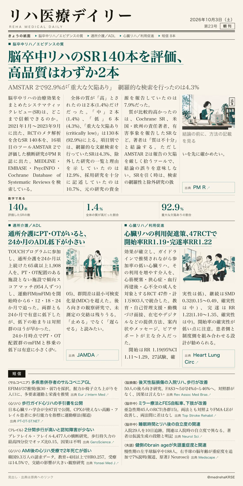
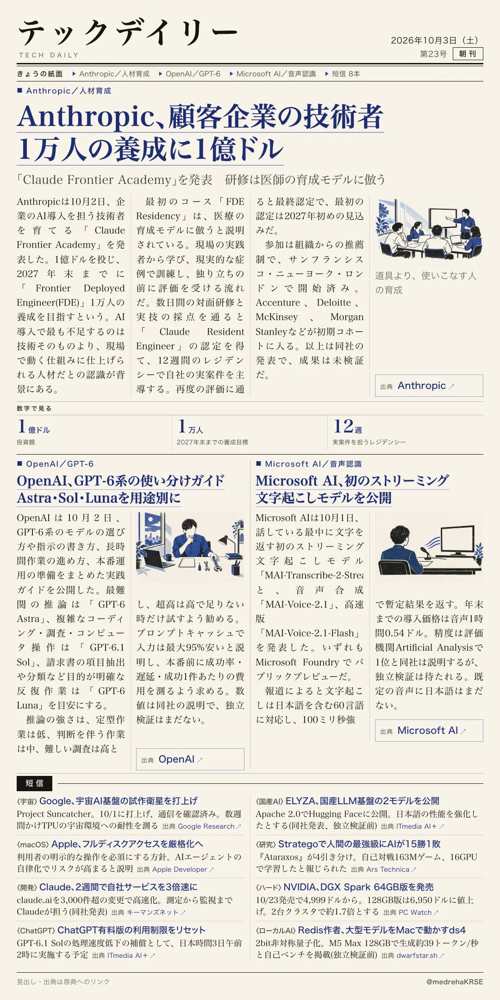

リハ医療デイリー
脳卒中リハのSR140本を評価、高品質はわずか2本
AMSTAR 2で92.9%が「重大な欠陥あり」 網羅的な検索を行ったのは4.3%
脳卒中リハのシステマティックレビューの方法論の質を調べた横断研究。

テックデイリー
Anthropic、顧客企業の技術者 1万人の養成に1億ドル
「Claude Frontier Academy」を発表 研修は医師の育成モデルに倣う
Anthropicが企業のAI導入を担う技術者の養成プログラムを発表した。
